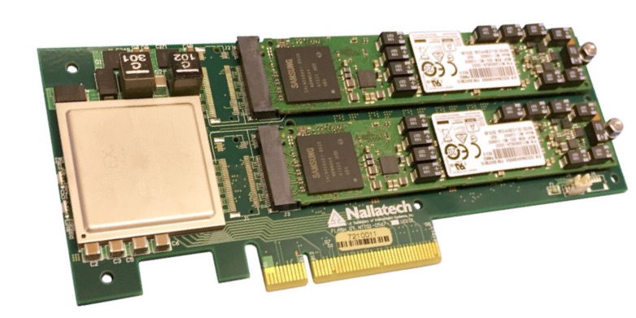

CAPI SNAP Development for Programmers
Introduction
IBM CAPI SNAP is an open source framework targeted at making FPGA-acceleration on IBM POWER servers as easy as possible. This book wants to help developers getting started by providing an A-to-Z explanation on how to create an acceleration example in SNAP. It includes setting up the environment, building and simulating the the given examples, creating one by yourself and evaluating it against software. If you have access to an IBM POWER System with a Nallatech 250S (or another compatible) FPGA-card you will also be able to execute examples on the real hardware.

Nallatech 250S FPGA
Why was this written?
When making first steps with IBM CAPI, which is the basis for SNAP, but also requires in-depth understanding of hardware development, the blog seriers "Tinkering with CAPI" by Kenneth Wilke helped us immensely. As there was no equivalent for SNAP, we thought writing up our acquired knowledge could help other people get started. It also serves as a report for a corresponding university project and therefore contains information in different levels of detail. Feel free to just pick out what you need.
Who wrote it?
The authors of this book are
- Balthasar Martin <balthasar.martin@student.hpi.de>
- Robert Schmid <robert.schmid@student.hpi.de>
- Lukas Wenzel <lukas.wenzel@student.hpi.de>
who are students at the Hasso-Plattner-Institute in Potsdam and constituted the masters project 'Heterogeneous Computing: acceleration and FPGAs in context of POWER and CAPI' . The project was offered at the chair for Operating Systems and Middleware in cooperation with IBM and was supervised by
- Prof. Dr. Andreas Polze <andreas.polze@hpi.de>
- Felix Eberhardt <felix.eberhardt@hpi.de>
- Max Plauth <max.plauth@hpi.de>.
We also want to thank everyone at IBM who held close contact and helped us during the project, including but not limited to: Frank Haverkamp, Jörg-Stephan Vogt, Sven Boekholt, Thomas Fuchs, Bruno Mesnet and Bruce Wile.